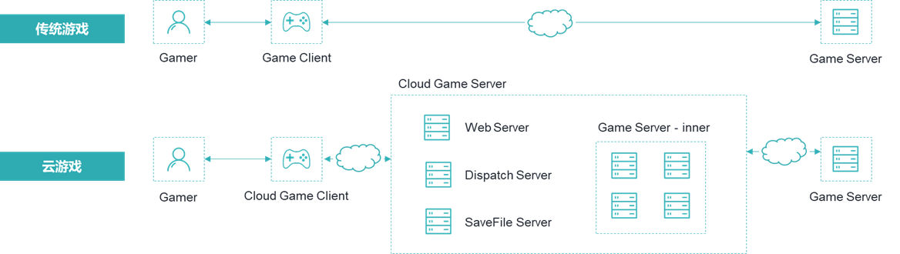

云游戏以云计算技术为基础，将游戏运行所需的大部分计算过程（如图形渲染、逻辑处理等）放置在云端进行，并将游戏渲染的画面以流的形式传输给游戏玩家。
传统游戏和云游戏的对比，如下图所示。

与传统游戏模式相比，云游戏模式下玩家的客户端无需进行复杂的游戏运算与画面渲染过程，只需要完成玩家游戏指令的采集和上传、云端游戏运算结果（视频流）的接收和展示，无论游戏多大，都可以实现游戏终端的轻量化。
云游戏模式降低了对玩家设备的性能要求，同时玩家客户端大小可降低至十兆左右，从而实现游戏的快速安装与启动。
云游戏借助于轻量级云游戏客户端，可以实现诸多场景，如：